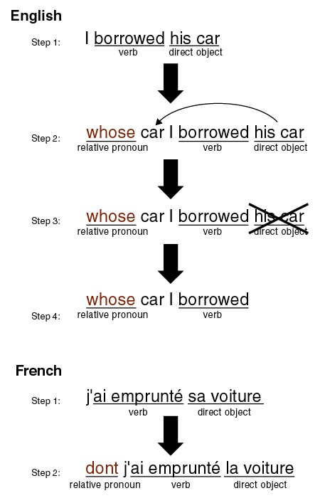

ANSWERS
1.
The relative
pronoun dont means whose in the above sentences.
2.
In English,
the noun to which whose refers must follow the word directly; so in
the last three sentences the direct object noun is moved from its original
position after the verb to the head of the subordinate clause:
|
I borrowed his
car. |
whose car I
borrowed |
|
j’ai emprunté sa
voiture |
dont j’ai emprunté la voiture |
|
 |